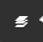
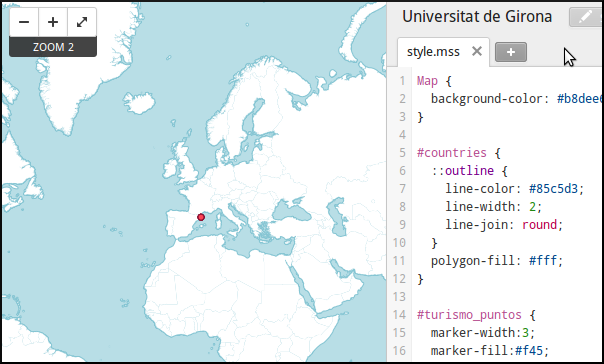
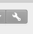
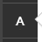
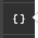
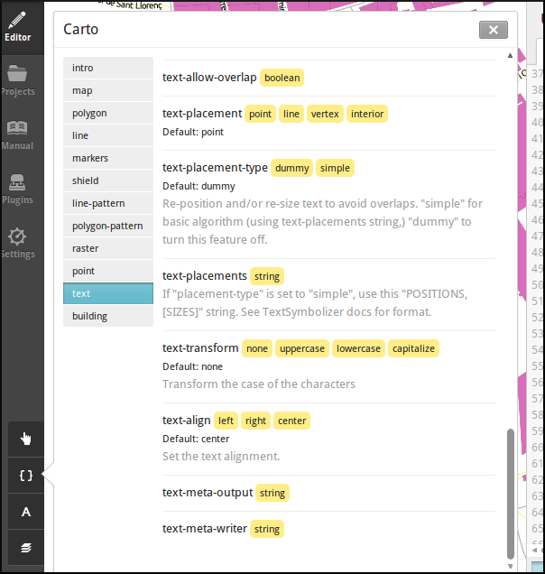
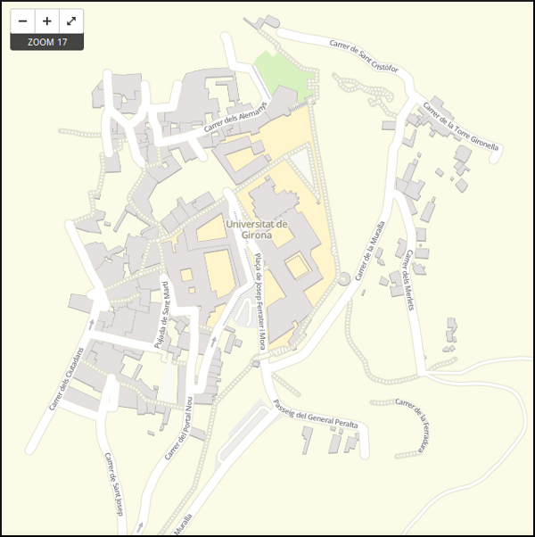

6. Taller de TileMill¶
Note
Autores:
- Pedro-Juan Ferrer @vehrka · pferrer@osgeo.org
- Iván Sanchez @realivansanchez · ivan@sanchezortega.es
- Santiago Tramoyeres @santracraus
Licencia:
Excepto donde quede reflejado de otra manera, la presente documentación se halla bajo licencia Creative Commons Reconocimiento Compartir Igual
A continuación se detalla una práctica guiada en la que se verán los detalles básicos del manejo de la aplicación TileMill.
Se espera del lector que vaya ejecutando las instrucciones que se detallan a continuación y en caso de duda pregunte al facilitador.
6.1. Iniciando TileMill¶
Arrancamos TileMill usando el icono que hay en el menú de aplicaciones en la sección de Graphics, aunque en algunas instalaciones de TileMill puede que este método no funcione, por lo que tendremos que levantar el servicio manualmente.
Si al usar el icono del menú de aplicaciones no arranca TileMill, y solamente si no se abre la aplicación al pulsar el icono en el menú Graphics abriremos una consola de comandos y escribiremos:
$ sudo service tilemill start
Y a continuación abrimos el navegador Chrome y vamos a la página http://localhost:20009
6.2. Creando el proyecto¶
TileMill carga por defecto la pestaña de Projects y en ella tenemos el botón + New Project que pulsaremos definir nuestro proyecto.

Nos muestra la ventana de información del proyecto en la que deberemos introducir los datos básicos que lo identifiquen.

- Filename
- UdG
- Name
- Universitat de Girona
- Description
- Mapa del entorno de la Universitat de Girona
- File format
- PNG 24
- Default data
- Dejar marcado
Y pulsamos el botón Add
Al abrir el proyecto, pulsando sobre el en la pestaña Projects vemos que se han cargado una capa de países por defecto y que tiene un nivel de visualización bastante alto.
6.3. Añadiendo una capa de puntos¶
Procederemos ahora a añadir nuestra primera capa de puntos, para lo que desplegaremos el menú de capas pulsando en el botón  y seleccionamos + Add layer
{kind=link}
En la ventana que aparece seleccionaremos la opción de PostGIS y rellenamos los campos como se indica.

- ID
- turismo_puntos
- Class
- turismo
- Connection
- host=localhost port=5432 user=osm password=osm dbname=osm
- Table or subquery
- osm_tourism
- Extent
- Dejar en blanco
- Unique key field
- osm_id
- Geometry field
- geometry
- SRS
- Dejamos la opción por defecto 900913
Y pulsamos Save & Style para que añada los datos.
Veremos como inmediatamente aparece un punto en la zona de España.
{kind=link}
6.3.1. Corrigiendo la visualización por defecto¶
En realidad nuestra zona de trabajo es bastante más pequeña que la que muestra por defecto TileMill, por lo que modificaremos las preferencias para que muestre por defecto una zona más ajustada a nuestro juego de datos. Para ello pulsaremos en el botón de configuración del proyecto  y lo configuramos de la siguiente forma:
{kind=link}
- Zoom
- Desplazar las barras para que los niveles de zoom estén entre 14 y 20
- Center
- 2.8279,41.9855,14
- Bounds
- 2.8256, 41.9834, 2.8304, 41.9867
{kind=link}
6.4. Simbología de valores únicos¶
Como se puede apreciar los 7 puntos de interes de tipo Amenities/Tourism que hay en la zona aparecen representados con la misma simbología, sin embargo sabemos que corresponden a tipos distintos.
Como vimos en el bloque anterior (Pintando con clase) se pueden usar condiciones para variar la simbología.
Para definirlas es necesario conocer el nombre del campo de la tabla (type) y sus valores (hotel, museum, viewpoint e information)
#turismo_puntos {
marker-width:3;
marker-line-color:#813;
marker-allow-overlap:true;
[type = 'hotel'] {
marker-fill:#f45;
}
[type = 'museum'] {
marker-fill:#ffc425;
}
[type = 'viewpoint'] {
marker-fill:#94ff14;
}
[type = 'information'] {
marker-fill:#1cffb1;
}
}
6.5. Elementos lineales¶
Para representar las calles utilizaremos una de las ayudas que proporciona ImpOSM; como ya hemos dicho, por defecto separa las vías en varias tablas, pero también crea una vista de PostGIS que aglutina toda la información relativa a estas.
Añadiremos una nueva capa de PostGIS que lea la información de la tabla osm_roads y añadiremos una entrada para cada tipo de vía.
- footway
- living_street
- path
- pedestrian
- residential
- service
- steps
- track
Para obtener todos los distintos tipos de vía podemos usar emplearemos pgAdmin III donde podemos lanzar la query:
SELECT DISTINCT type FROM osm_roads;
Para representarlo usaremos el código siguiente:
#calles_lineas {
line-width:1;
[type = 'footway'], [type = 'pedestrian'] {
line-color:#f2f974;
}
[type = 'residential'],[type = 'living_street'],
[type = 'service'] {
line-color:#aaa;
}
[type = 'steps'] {
line-color:#7cc7fd;
}
[type = 'path'], [type = 'track'] {
line-color:#ff9f3b;
}
}
6.6. Añadiendo los edificios¶
Añadiremos ahora los edificios, que están en la tabla osm_buildings.
#edificios {
line-color:#a71b62;
line-width:0.5;
polygon-opacity:1;
polygon-fill:#d86ebb;
}
6.7. Añadiendo etiquetas¶
Por último, añadiremos los nombres de las calles, para lo cual primero tenemos que definir una variable, preferentemente al principio de todas las definiciones, que tenga el nombre de la fuente y las posibles fuentes sustitutas si la fuente no está instalada en el sistema.
@futura_med: "Futura Medium","Function Pro Medium","Ubuntu Regular","Trebuchet MS Regular","DejaVu Sans Book";
TileMill incorpora un gestor de fuentes que nos permite ver qué fuentes hay instaladas en el sistema al que se accede empleando el botón de fuentes , las fuentes instaladas aparecen en negrita y el gestor nos permite copiar y pegar literalmente el nombre de la fuente.
{kind=link}
Aunque la capa de calles ya tiene el campo name que es el que vamos a utilizar, es siempre muy recomendable volver a añadir la capa y usarla exclusivamente para las etiquetas. En este caso rellenaremos los campos con los siguientes datos:
- ID
- calles_nombres
- Class
- nombres
- Connection
- dbname=osm host=localhost port=5432 user=osm password=osm
- Table or subquery
- (SELECT * FROM osm_roads WHERE name IS NOT NULL) AS foo
- Unique key field
- osm_id
- Geometry field
- geometry
En esta ocasión en vez de la tabla, hemos usado una subconsulta, de forma que solo carguemos en memoria las entidades que tengan algún valor en el campo name. A las subconsultas hay que añadirles un alias para que TileMill las reconozca.
TileMill habrá asignado a la capa un estilo por defecto para capas de líneas, aunque nosotros lo vamos a modificar para que represente textos:
#calles_nombres {
text-name: "[name]";
text-face-name: @futura_med;
text-placement: line;
}
Estos son los elementos mínimos para que una etiqueta aparezca en TileMill, aunque si vamos a la ayuda del programa  y vemos la sección text veremos que las etiquetas tienen 30 opciones de configuración distintas.
{kind=link}
{kind=link}
6.8. Orden de las capas¶
El orden de renderizado de las capas es el orden en el que aparecen en el gestor de capas , para cambiar el orden basta pulsar en el indicador del tipo de capa (puntos, líneas y áreas) que hay junto al nombre y arrastrar hacia arriba o hacia abajo la capa.
6.9. Ejercicio¶
Como ejercicio del taller se propone incorporar al mapa los contenidos de las tablas osm_arboles y osm_landusages.
6.10. Extra: OSM-Bright¶
Recientemente MapBox ha publicado un ejemplo completo de representación de datos de OSM empleando TileMill.
Si queremos ver como quedaría nuestro juego de datos con este estilo deberemos cerrar TileMill y en una consola de sistema escribir lo siguiente:
$ cd ../datos/mapbox-osm-bright/
$ ./make.py
$ cd ../..
$ imposm --read UniversitatGirona.osm --write --database osm --host localhost --user osm --optimize --overwrite-cache --deploy-production-tables -m /home/jornadas/taller_osm_tilemill/datos/mapbox-osm-bright/imposm-mapping.py
Si volvemos a abrir TileMill veremos que se ahora existe un proyecto nuevo llamado OSM Bright Universitat de Girona y tras abrirlo, teniendo en cuenta que puede tardar un poco mientras comprueba las capas,
En el ejemplo proporcionado por MapBox se puede ver como se representan muchos elementos y como condicionar la visualización usando niveles de zoom.
{kind=link}